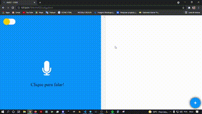

Introdução
O AIVOZ é um projeto criado com intuito de desenvolver aplicações web por meio de comandos por voz. Sua ideia se baseia em qualquer pessoa de qualquer lugar utilizar, através do seu navegador, a aplicação e emitir comandos pré programados para usufruir do seu poder. Atualmente, o AIVOZ tem comando apenas para HTML.
Sobre
Um dos mais usados por vários projetos em todo o mundo, o AIVOZ utiliza a Web Speech API para o reconhecimento de voz para interação usuário/máquina. O AIVOZ utiliza o Codemirror como editor de texto, sendo este uma ferramenta poderosa. Para mais informações sobre as tecnologias utilizadas neste projetos, abaixo os links para acessa-las.
Como usar
Como a ideia se baseia em comando por voz, além dos comandos para codificação, existem outros comandos para adaptação da plataforma e deixar o usuário confortavel para manusea-la. Logo abaixo estão dividos os comandos por seções.
# Layout
Para mudança do layout da página ou modo, atualmente existem dois tipo, o modo claro e o modo escuro. O modo claro é por padrão.
Comando Modo claro
Clique no botão do voice, caso seu navegador peça permissão, aceite. Após clicar fale: Modo claro

Comando Modo escuro
Clique no botão do voice, caso seu navegador peça permissão, aceite. Após clicar fale: Modo escuro
# Estruturas
Você também poderá criar estruturas com apenas um comando. Atualmente o AIVOZ suportar duas estruturas, uma sendo o HTML simples e o Bootstrap. As estruturas são o corpo de todo e qualquer Documento Web. As estruturas sergem para descrever como a sua página web será montada.
Comando HTML simples
Clique no botão do voice, caso seu navegador peça permissão, aceite. Após clicar fale: Estrutura html
Comando Bootstrap
Clique no botão do voice, caso seu navegador peça permissão, aceite. Após clicar fale: Estrutura Boostrap
# Marcadores ou Tags
Marcadores têm a função de interligar, por meio de estruturas formatadas as informações em uma página seguindo algumas regras. Um marcador vem precedido de ``<'' e sucedido de ``>''. Entre as delimitações existe o nome do marcador que caracteriza uma regra imposta
Dito isso, para a criar Marcadores no AIVOZ é muito simples. Antes deve-se destacar os Marcadores presentes, são eles:
Marcadores
- a
- div
- form
- h1
- h2
- h3
- h4
- h5
- h6
- img
- input
- label
- p
Para utilizar os marcadores é bem simples, basta seguir as regras abaixo>
Div
Para criar uma Div, clique no voice e fale "divi" . Com isso, nota-se a criação de uma Div, esta, por sua vez pode ser em formato cascata, ou seja, ao falar mais, de forma pausada, poderá criar várias Divs dentro a mesma.
Autor
Olá, tudo bem? Meu nome é Lucas Marques Bandeira. Tenho 23 anos e estudo Ciência da Computação no IFCE - Instituto Federal de Educação, Ciência e
Tecnologia do Ceará / Campus Aracati / Ce. Trabalho na área de Design Gráfico há 4 anos. Minha especialidade
é inkscape e gimp. Também trabalho com desenvolvimento web no front-end. Desenvolvo aplicações web
utilizando HTML, CSS, JS e o Bootstrap e Vue.js. Com o foco no front-end, crio muitos layouts lindos e
interativos. Caso tenh interesse neste trabalho e em outros, acesse meu github